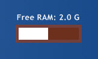

Meter=Bar displays a horizontal or vertical bar that fills according to the percentual value of a measure.
BarImage, except Tile.
MeasureNameBarColorBarImageBarColor.
BarBorderBarImage is specified, defines the number of pixels on either side of the image that are always drawn (i.e. top and bottom margins for vertical bars, left and right margins for horizontal bars).
BarOrientation Default: HorizontalHorizontal and Vertical.
Flip Default: 01, the direction of the bar is flipped.

An example skin demontrating a Bar meter.